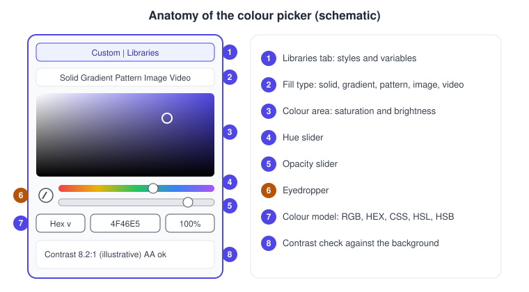
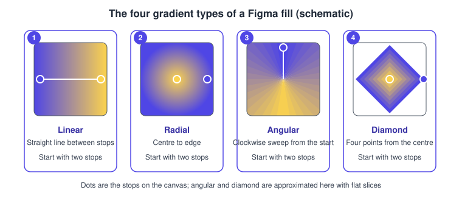
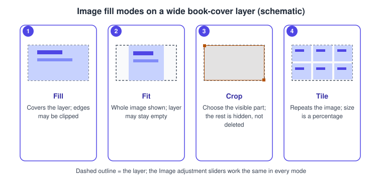

Color, Fills and Images
|
This content was generated with the assistance of AI and should be verified against the official documentation before being relied on in production. |
This page was written on 2026-10-30 against the UI3 interface of Figma Design. Fills, gradients, the colour picker, images and the eyedropper are generally available on every plan, and changing them needs edit access to the file, which means a Full seat in the current seat model. Video fills are the exception: they need a paid plan. None of the features described here is in beta.
The running example is the Bookshelf mobile app: a book card whose cover is an image fill, a tinted gradient behind the title, and a call-to-action button with a solid brand colour whose contrast against its label has to be good enough to read. Frames, shapes and layers themselves are described on Frames, Groups and Sections and Shapes, Vectors and the Pen Tool; borders, shadows and blending are on Strokes, Effects and Blend Modes.
Fills in the right sidebar
A fill is what paints the inside of a layer. In UI3 it is edited in the Fill section of the right sidebar, with the plus button adding a fill, the swatch opening the colour picker, an opacity field next to the swatch, an eye icon to hide the fill and a minus button to remove it. Five kinds of fill exist:
-
Solid: a single colour.
-
Gradient: a blend of two or more colours, or of tints of one colour.
-
Pattern: a fill that references another object on the canvas.
-
Image: a static picture.
-
Video: a video or an animated GIF.
A layer can carry several fills at once, each with its own opacity and visibility, and they can be reordered by dragging the handle that appears at the left edge of a fill when the pointer is over it. The same kinds of fill can be applied to a stroke from the Stroke section. Layer fills only show on closed objects, while strokes show on open and closed objects. The fill of a text layer changes only the colour of the text; to put a background behind a label, place the text inside a frame and fill the frame. A fill can be saved as a colour style or bound to a colour variable so that it can be reused.
Source: Figma Learn: Guide to fills
The colour picker
Clicking a fill swatch opens the colour picker. It is the same panel for every kind of fill, and a layer must already have a fill or stroke before the picker can be opened.

-
The tabs switch between a custom colour and the styles and variables of the libraries added to the file; the plus button creates a new colour style or variable.
-
The fill type selector switches between solid, gradient, pattern, image and video.
-
The colour area picks saturation and brightness.
-
The hue slider picks the hue.
-
The opacity slider sets the transparency of the colour.
-
The eyedropper samples a colour from the canvas.
-
The colour model dropdown switches the notation between RGB, HEX, CSS, HSL and HSB.
-
The accessibility view shows the contrast ratio against the background.
The picker also previews and applies a blend mode, which is covered on the strokes, effects and blend modes page. The colour models are only different ways of writing the same colour: HEX is the web notation, RGB and CSS suit code, and HSL and HSB describe a colour as hue, saturation and lightness or brightness, which is easier for adjusting a palette by hand.
Procedure: give the Bookshelf button its brand colour.
-
Select the "Add to shelf" button rectangle.
-
In the Fill section of the right sidebar, click the swatch to open the colour picker.
-
Choose the Solid fill type.
-
Pick the colour model HEX in the dropdown and type the brand value.
-
Check the contrast against the label (see below), then save the fill as a style or bind a variable so the whole app uses one value.
Gradients
Choose Gradient in the picker, then pick one of four types. Each gradient starts with two colour stops.

-
Linear moves between two colours along a straight line.
-
Radial puts one colour at the centre and the other at the edge.
-
Angular sweeps clockwise from its starting position; moving the stops makes the angle softer or harsher.
-
Diamond uses four points starting from the centre, and its width and height can be adjusted independently.
Stops are the colours of a gradient. Drag a stop to reposition it, click along the gradient slider or use the plus next to Stops to add one, and remove a selected stop with Delete or the minus button. Flip gradient reverses the colour order and Rotate gradient changes the orientation. A colour variable can be applied to an individual stop through the Libraries tab, and detached again with Detach variable. A gradient, including its variable values, can be saved as a style. Figma does not state a maximum number of stops.
Procedure: add a tinted gradient behind the title of a book card.
-
Draw a rectangle behind the title and open its Fill swatch.
-
Choose Gradient and then Linear.
-
Select the first stop and set a deep indigo; select the second and set the same colour with an opacity of zero so that it fades out.
-
Drag the handles on the canvas so the fade runs from the bottom of the card upwards.
-
Add a third stop by clicking the slider if the transition looks abrupt.
Image and video fills
An image is just a fill, so any shape or frame can be a photo or a book cover. In the picker choose Image and select a file, or drag a file onto the canvas, paste it, import it through the file browser or use the image and video tool, which bulk-places several files and has the shortcut Shift Cmd K on macOS and Shift Ctrl K on Windows. Dropping a new file onto an existing fill preview replaces it. Supported images are JPG, PNG, HEIC, WebP, GIF and TIFF (TIFF only in Safari), and supported videos are MP4, MOV and WebM. An imported SVG becomes editable vector layers, not an image fill. An image larger than 4096 by 4096 pixels is scaled down proportionally so that its longest side is at most 4096 pixels, and some metadata may be lost. Video fills require a paid plan and no length or size limit is documented.
An image fill has four fill modes, chosen in the picker.

-
Fill scales the image to cover the whole layer, so parts of the image may be clipped.
-
Fit keeps the whole image visible inside the layer, so parts of the layer may stay empty.
-
Crop lets you choose which part of the image shows; cropping is non-destructive, like a mask, so the hidden area is not deleted.
-
Tile repeats the image across the layer, with its size set as a percentage of the original.
The image settings also include adjustment sliders: Exposure, Contrast, Saturation, Temperature, Tint, Highlights and Shadows. They behave like the filters of a photo editor and are separate from the fill mode. Rotate 90 degrees turns only the image fill clockwise in 90 degree steps, not the object itself.
To crop, select the layer and double-click it, click Crop image in the Image section, or set the fill mode to Crop. Drag the handles, use the slider, pick an aspect ratio or click Resize to fit, then click the canvas or press Enter to apply. The ratio is preserved by default; hold Control or Fn to change it. Hold Option (macOS) or Alt (Windows) to affect opposite sides, hold Cmd (macOS) or Ctrl (Windows) and drag a corner to crop quickly, and hold Shift to rotate in 15 degree steps.
Procedure: put a cover on a Bookshelf book card.
-
Draw a 120 by 180 rectangle for the cover.
-
Open its Fill swatch and choose Image, then select the cover file.
-
Choose the Fill mode so the cover covers the rectangle; use Fit instead if the whole cover must stay visible.
-
Press Enter after double-clicking to crop to the part of the cover that matters.
-
Lower Exposure a little if the cover is brighter than its neighbours.
Source: Figma Learn: Crop an image
Pattern fills
A pattern fill references another object on the canvas and repeats it as the fill of a layer. The source is chosen in the colour picker after selecting Pattern. This page records only what the fills guide states; consult the pattern article linked from that guide for tiling controls.
Source: Figma Learn: Guide to fills
The eyedropper
The eyedropper samples a colour from any layer, image or background on the canvas and applies it to the selection. With a layer selected, press I, or Control C or I on macOS; for strokes, shadows and mixed selections, click the swatch first and then the eyedropper icon. While sampling, Tab cycles through Hex, RGB, HSL and HSB. Holding Shift and clicking applies a colour variable or style found under the pointer instead of the plain value. Holding Cmd Shift (macOS) or Ctrl Shift (Windows) and pressing Enter or clicking creates a style or variable from the sampled colour. Sampling outside the Figma canvas works only in the Figma desktop app for macOS, with the Screen and System Audio Recording permission, macOS 14 or newer and a recent desktop version; it does not work on Windows or in the browser.
Colour contrast
The picker has an accessibility view that shows the contrast ratio, with the selected layer as the foreground. Ratios range from 1:1 to 21:1. The WCAG guidance it applies is 4.5:1 for normal text and 3:1 for large text and graphics at level AA, and 7:1 for normal text at level AAA. An indicator flags values that fail, and clicking it moves to the nearest compliant colour. The category (Auto, Large text, Normal text, Graphics) and the level (AA, AAA, where AAA applies to text only) are settings. A passing ratio is necessary, not sufficient, for accessible design; the wider topic is covered on the web accessibility page of this site.
Common mistakes
-
Filling an open path and wondering why nothing shows: layer fills only paint closed objects; use a stroke for open paths.
-
Changing the fill of a text layer to give it a background: that only recolours the text.
-
Using a Fill-mode image that is too small for a large frame; images are limited to 4096 pixels on the longest side.
-
Expecting video fills on a free plan.
-
Typing a value in the wrong colour model; check the dropdown before pasting.
Where older guides are outdated
Guides written before April 2025 show the old interface, with the properties panel and its click paths, so the places where fills and the picker are reached differ from UI3. Several older guides present styles as the only way to reuse a colour; since colour variables became generally available on 2024-04-16, a fill can also be bound to a variable, and variables can be applied to individual gradient stops. Seat names such as editor and viewer were replaced by Full, Dev, Collab and View on 2025-03-11. The fundamentals of solid, gradient and image fills still apply. Note that Figma’s own colour picker article still carries a video recorded in the old interface while its written steps describe UI3.
Source: Figma release notes